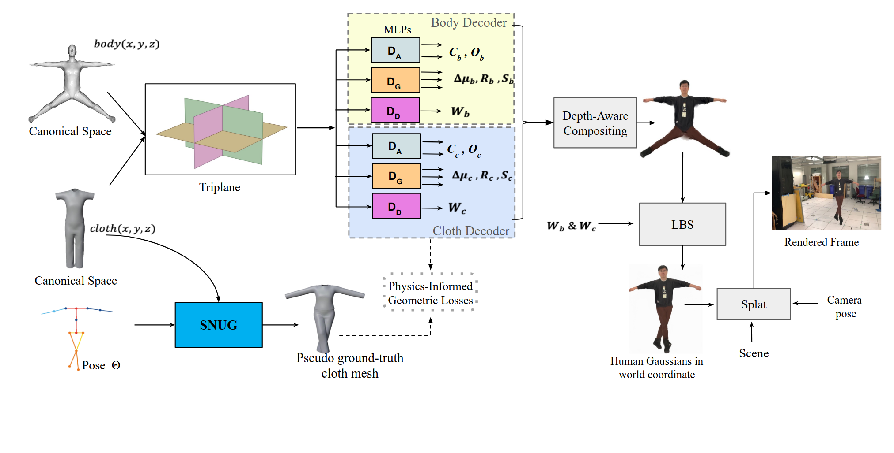
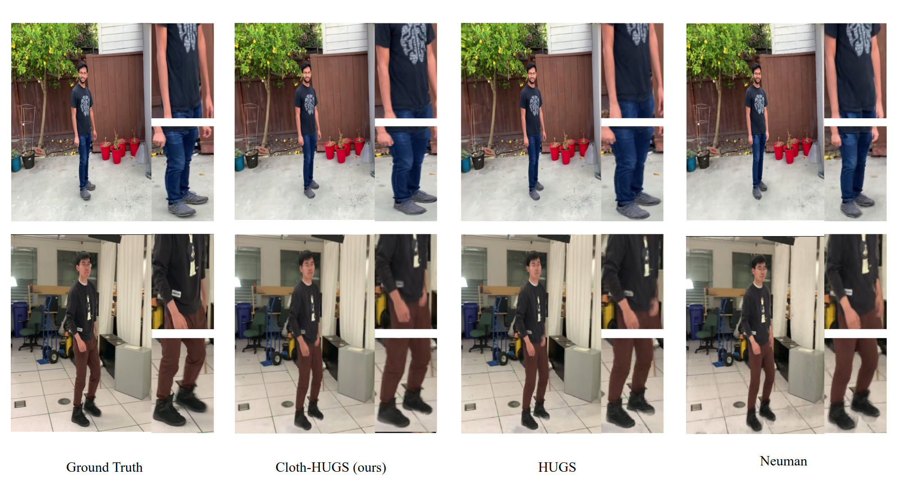

CLOTH-HUGS: CLOTH AWARE HUMAN GAUSSIAN SPLATTING
Abstract
We present Cloth-HUGS, a Gaussian Splatting based neural rendering framework for photorealistic clothed human reconstruction that explicitly disentangles body and clothing. Unlike prior methods that absorb clothing into a single body representation and struggle with loose garments and complex deformations, Cloth-HUGS represents the performer using separate Gaussian layers for body and cloth within a shared canonical space. The canonical volume jointly encodes body, cloth, and scene primitives and is deformed through SMPL-driven articulation with learned linear blend skinning weights. To improve cloth realism, we initialize cloth Gaussians from mesh topology and apply physics-inspired constraints, including simulation-consistency, ARAP regularization, and mask supervision. We further introduce a depth-aware multi-pass rendering strategy for robust body-cloth-scene compositing, enabling real-time rendering at over 60 FPS. Experiments on multiple benchmarks show that Cloth-HUGS improves perceptual quality and geometric fidelity over state-of-the-art baselines, reducing LPIPS by up to 28% while producing temporally coherent cloth dynamics.
Overview
Given a monocular video capturing dynamic human and camera motion, Cloth-HUGS reconstructs an animatable human avatar with explicit body–cloth disentanglement and synthesizes photorealistic renderings from novel viewpoints. The SMPL-based canonical body and cloth geometries are encoded into a shared TriPlane representation. From this representation, three lightweight MLPs predict Gaussian attributes, including color (C), opacity (O), spatial shift (Δµ), rotation (R), scale (S), and Linear Blend Skinning (LBS) weights (W). The LBS weights are shared between the body and cloth Gaussians, allowing pose-conditioned deformations (Θ) to warp them to the world space. A physics-aware deformation module (SNUG) refines the cloth dynamics. Differentiable 3DGS is used for rendering the final frame using depth-aware compositing for consistent blending between the body, cloth, and scene layers.

Cloth-HUGS overview: TriPlane-encoded Gaussians, physics-aware cloth, and depth-aware 3DGS rendering
Quantitative Results
Quantitative comparison of individual subjects from the NeuMan dataset. LPIPS* = LPIPS × 103. The best metric values are highlighted in green and the second-best in orange.
| Method | Seattle | Citron | Parking | Bike | Jogging | Lab | Average | ||||||||||||||
|---|---|---|---|---|---|---|---|---|---|---|---|---|---|---|---|---|---|---|---|---|---|
| PSNR | SSIM | LPIPS | PSNR | SSIM | LPIPS | PSNR | SSIM | LPIPS | PSNR | SSIM | LPIPS | PSNR | SSIM | LPIPS | PSNR | SSIM | LPIPS | PSNR | SSIM | LPIPS | |
| NeRF-T | 21.84 | 0.69 | 0.37 | 12.33 | 0.49 | 0.65 | 21.98 | 0.69 | 0.46 | 21.16 | 0.71 | 0.36 | 20.63 | 0.53 | 0.49 | 20.52 | 0.75 | 0.39 | 19.743 | 0.643 | 0.453 |
| HyperNeRF | 16.43 | 0.43 | 0.40 | 16.81 | 0.41 | 0.56 | 16.04 | 0.38 | 0.62 | 17.64 | 0.42 | 0.43 | 18.52 | 0.39 | 0.52 | 16.75 | 0.51 | 0.23 | 17.032 | 0.423 | 0.460 |
| Vid2Avatar | 17.41 | 0.56 | 0.60 | 14.32 | 0.62 | 0.65 | 21.56 | 0.69 | 0.50 | 14.86 | 0.51 | 0.69 | 15.04 | 0.41 | 0.70 | 13.96 | 0.60 | 0.68 | 16.192 | 0.565 | 0.637 |
| NeuMan | 23.99 | 0.78 | 0.26 | 24.63 | 0.81 | 0.26 | 25.43 | 0.80 | 0.31 | 25.55 | 0.83 | 0.23 | 22.70 | 0.68 | 0.32 | 24.96 | 0.86 | 0.21 | 24.543 | 0.793 | 0.265 |
| HUGS | 25.94 | 0.85 | 0.13 | 25.54 | 0.86 | 0.15 | 26.86 | 0.85 | 0.22 | 25.46 | 0.84 | 0.13 | 23.75 | 0.78 | 0.22 | 26.00 | 0.92 | 0.09 | 25.592 | 0.850 | 0.157 |
| Ours | 26.15 | 0.85 | 0.10 | 25.78 | 0.86 | 0.09 | 26.78 | 0.84 | 0.14 | 25.56 | 0.85 | 0.10 | 23.57 | 0.76 | 0.18 | 26.14 | 0.92 | 0.07 | 25.663 | 0.847 | 0.113 |
| Method | Seattle | Citron | Parking | Bike | Jogging | Lab | Average | ||||||||||||||
|---|---|---|---|---|---|---|---|---|---|---|---|---|---|---|---|---|---|---|---|---|---|
| PSNR | SSIM | LPIPS | PSNR | SSIM | LPIPS | PSNR | SSIM | LPIPS | PSNR | SSIM | LPIPS | PSNR | SSIM | LPIPS | PSNR | SSIM | LPIPS | PSNR | SSIM | LPIPS | |
| Vid2Avatar | 16.90 | 0.51 | 0.27 | 15.96 | 0.59 | 0.28 | 18.51 | 0.65 | 0.26 | 12.44 | 0.39 | 0.54 | 16.36 | 0.46 | 0.30 | 15.99 | 0.62 | 0.34 | 16.027 | 0.537 | 0.331 |
| NeuMan | 18.42 | 0.58 | 0.20 | 18.39 | 0.64 | 0.19 | 17.66 | 0.66 | 0.24 | 19.05 | 0.66 | 0.21 | 17.57 | 0.54 | 0.29 | 18.76 | 0.73 | 0.23 | 18.308 | 0.635 | 0.227 |
| HUGS | 19.06 | 0.67 | 0.15 | 19.16 | 0.71 | 0.16 | 19.44 | 0.73 | 0.17 | 19.48 | 0.67 | 0.18 | 17.45 | 0.59 | 0.27 | 18.79 | 0.76 | 0.18 | 18.897 | 0.688 | 0.185 |
| Ours | 18.68 | 0.65 | 0.14 | 19.12 | 0.70 | 0.13 | 19.32 | 0.71 | 0.15 | 19.48 | 0.66 | 0.15 | 17.22 | 0.57 | 0.24 | 19.05 | 0.76 | 0.15 | 18.812 | 0.675 | 0.160 |
Qualitative Results
Across subjects, poses, and apparel, Cloth-HUGS produces sharper facial details, cleaner body–cloth boundaries, and more accurate cloth geometry. In the first row, Cloth-HUGS preserves finer wrinkles near the T‑shirt hem, whereas HUGS appears smoother and NeuMan exhibits pose-related artifacts. In the second row, Cloth-HUGS resolves hand–shirt separation and occlusions while HUGS blends regions and NeuMan misplaces the arm; Cloth-HUGS also preserves clearer pant‑level wrinkle cues. Overall, Cloth-HUGS achieves the strongest perceptual fidelity and geometric coherence, enabled by explicit body–cloth separation and physics‑guided regularization. Refer to the figure for side‑by‑side comparisons and annotations.

Qualitative comparison: Cloth-HUGS vs HUGS and NeuMan
BibTeX
@misc{mubashshira2026clothhugs,
title={CLOTH-HUGS: Cloth Aware Human Gaussian Splatting},
author={Mubashshira, Sadia and Amini, Nazanin and Desai, Kevin},
note={Under review at ICIP 2026},
year={2026}
}